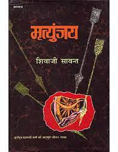
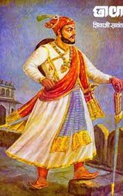
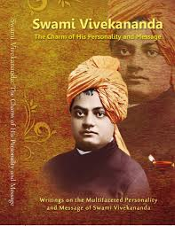

A beautiful book for reading in Marathi by Shivaji Sawant. An Indian novelist in a Marathi language. Mrityunjaya, a Marathi book based on “Karna” of Mahabharata. This is the best book for reading in Marathi. This book is translated into English, Hindi, Gujarati, Kannada.
An awesome book for reading in Marathi by Shivaji Sawant. An Indian writer written a book in Marathi language. Chhava, a Marathi book based on the story of “Sambhaji Bhosale, the elder son of Chhatrapati Shivaji”. It is listed in the best book for reading in Marathi.
Teachings of Swami Vivekananda is a book in the genre of Philosophy, Religion and Spirituality. This book is a collection of Swami Vivekananda's sayings, arranged by subject. It contains many of the saint's ideals, philosophies and teachings.
